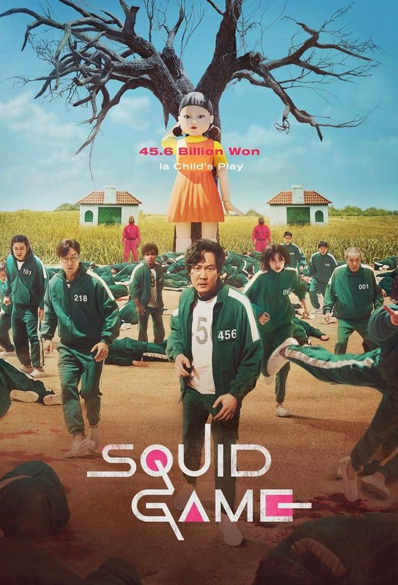

El juego del calamar

Resumen
Todo empieza cuando un joven que se lleva mal con todo el mundo, tiene deudas y se gasta todo el dinero en apuestas, recibe una visita un tanto peculiar. Un hombre uniformado le ofrece dinero a cambio de pegarle. Accede y gana dinero. Luego le entrega una tarjeta para que participe en el juego del calamar. Finalmente llama y decide entrar en el juego. Será recogido por una furgoneta con otros desgraciados, pierde el conocimiento mediante un gas y lo llevan a una isla alejada de toda civilización.Llega a un complejo donde unos soldados vestidos de rojo, capucha y extraños símbolos en la cabeza los dirigen. Allí conoce a una serie de personajes, cada cual más carismático, que le acompañaran en una serie de juegos con tres reglas: hay que jugar siempre, los que no jueguen serán eliminados y todo termina si la mayoría quiere que termine. Pero la mayoría accede a jugar. El premio un montón de dinero, tanto que no podrían gastar ni en 100 vidas.
Reparto principal